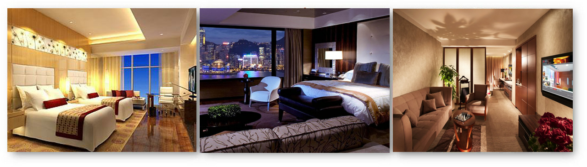

自动化智能管理酒店是由实力雄厚的星尚.严格按照四星级标准改建装修的豪华商务型酒店。酒店位于怀化市商业区核心地段——迎丰中路99号，驱车至火车站5分钟车程，芷江机场20分钟车程，地理位置优越，交通极为便利。 原金苑宾馆隶属于怀化市公安交警支队，属全民所有制企业，因装修多年，设备陈旧老化，为使其更加具有市场竞争力，于2011年6月份由湖南省星尚·金苑管理有限公司重新改建、改模装修。 酒店主楼14层，裙楼8层，内设大型停车场，共有车位100个。客房拥有豪华套房及高级客房等110间/套，所有客房均由名家设计，布置完善细致，设施齐备高档，风格典雅温馨，环境舒适自由；均设有中央空调、冷热饮设备、私人保险箱，电话留言系统、卫星闭路电视、国际国内直拨电话，多媒体宽带网络、迷你吧、电子门匙系统等，令起居倍感愉悦。
酒店餐厅共有餐位800个；其中高档别致的豪华包厢17间，极具人性化的设计风格，可迎合客人的不同需求和自由选择，能为客人提供正宗鱼翅燕窝、鲍参翅肚、珍贵海鲜等。所有珍馐美食均由名师主理，让阁下全方位品味中西饮食文化精粹，倍感轻松惬意。 宴会厅设施齐全，功能先进，装修豪华，可为各种酒会、宴会和文艺演出等予以妥善完备安排，根据客户特别需要，提供专业服务，迎合不同需求；会议中心配有先进的影音及灯光设备，亦可根据客人需要，提供大小不等的会议室，以满足商务客人不同的会议需求。
